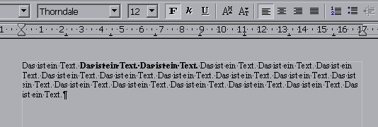

| [zurück] | [Hauptmenü] |
[weiter] |
OpenOffice.org Textdokument
01b - einfache Textformatierung
Text ändern
Die einfachste und schnellste Art Text zu ändern
(Größe, Schnitt, Farbe, ...) besteht darin, ihn zu
markieren und mit Hilfe der Standard-Objektleiste
zu formatieren. Das funktioniert relativ einfach und wird
hier gezeigt:
- Text markieren:
-
- Cursor an den Beginn setzen
- linke Maustaste gedrückt halten
- Maus ziehen
- loslassen
- oder:
-
- Cursor an den Beginn setzen
- SHIFT-Taste gedrückt halten
-
Cursortasten der Tastatur verwenden (zusätzlich STRG-Taste gedrückt halten, um ganze Wörter zu wählen, außerdem könnte die "Pos1" oder "Ende" sowie "Bild-Hinauf" und "Bild-Hinunter" Taste hilfreich sein)
- SHIFT-TASTE loslassen
Beispiel
| 1. |
|
| 2. | |
| 3. |
|
| 4. |
 |
Alle anderen Optionen in der Objektleiste funktionieren ganz analog. Weitaus systematischer formatiert man aber mit dem Stylisten. Er ist das empfohlene Werkzeug!
Möchten Sie den markierten Text kopieren oder verschieben funktioniert das analog über das Bearbeiten Menü oder den Symbolen in der Funktionsleiste .
Tipp
Möchten Sie mehrere Textteile gleichzeitig markieren, so müssen Sie die Maus zum Markieren verwenden und zwischen den Auswahlen die STRG-Taste durchgehend gedrückt halten. Das kann sich in vielen Situationen als praktisch erweisen!| [zurück] | [Hauptmenü] |
[weiter] |
© Copyright 2003, Harald Schilly
This documentation is part of "Erste Schritte: OpenOffice.org Textdokument", which is released
under the terms of the PDL.
For full copyright and license info read the index page.